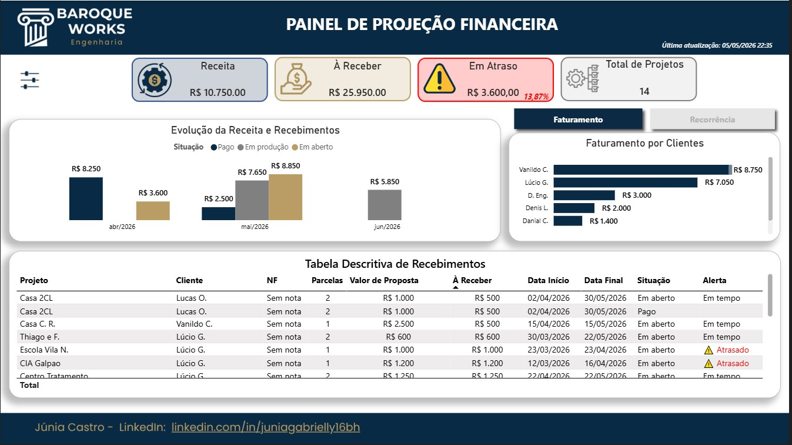
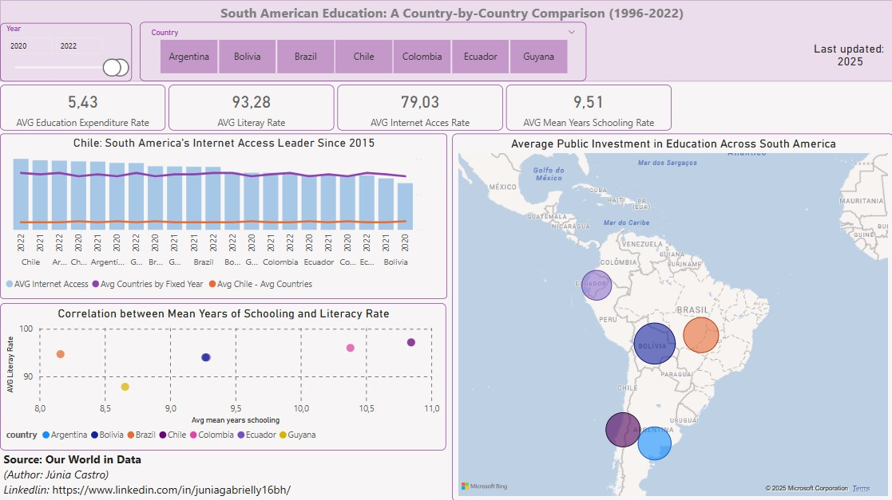
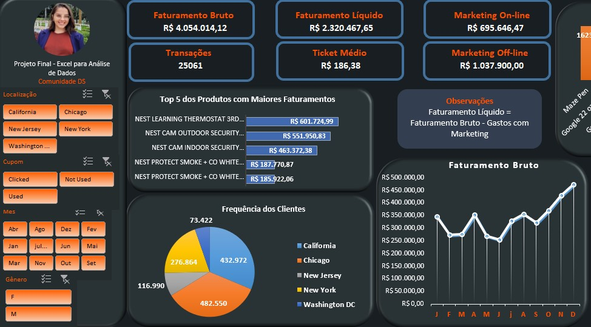
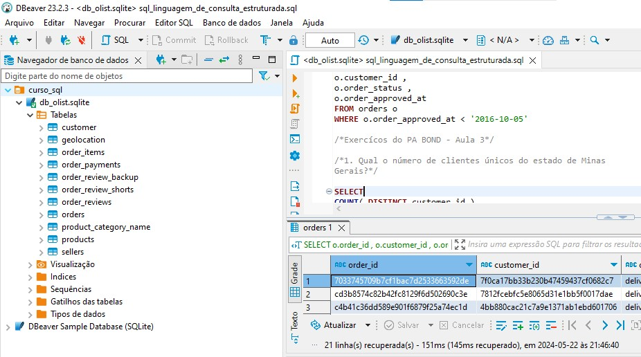

Business Intelligence
- Executive Dashboards
- KPI Analysis
- Data Storytelling
- Business Analysis
I am a Business Intelligence Analyst with a background in Mathematics and experience in Power BI, SQL Server, ETL, data modeling and executive dashboards.
My work combines analytical thinking, business vision and visual communication to transform data into strategic and actionable insights.
Currently, I am specializing in Data Engineering at PUC Minas, expanding my knowledge in data architecture, pipelines and modern data solutions.

Power BI | Power Query | DAX | Business Analysis
Business Intelligence dashboard developed to analyze financial performance, revenue evolution, project profitability and payment status for an engineering company.
The company needed a clearer view of its financial performance, including revenue, projects, payment deadlines and overall business indicators.
Development of an interactive Power BI dashboard with executive KPIs, financial indicators, project analysis and visual storytelling to support decision-making.

Power BI | Data Modeling | Storytelling
Analytical dashboard developed to compare educational indicators across South American countries, connecting internet access, schooling and public investment.
Understand how educational and digital inequalities impact countries across South America.
Development of an interactive Power BI dashboard with KPIs, maps and comparative analysis.

Excel | Power Query | ETL
Business analysis project focused on sales performance, customer behavior and product revenue.
Identify the best-selling and most profitable products by city and customer profile.
ETL execution in Power Query, data modeling and dashboard creation in Excel.

SQL | SQLite | DBeaver
SQL project developed to answer business questions using relational e-commerce data.
I am open to opportunities, collaborations and projects involving Business Intelligence, Analytics and Data Engineering.